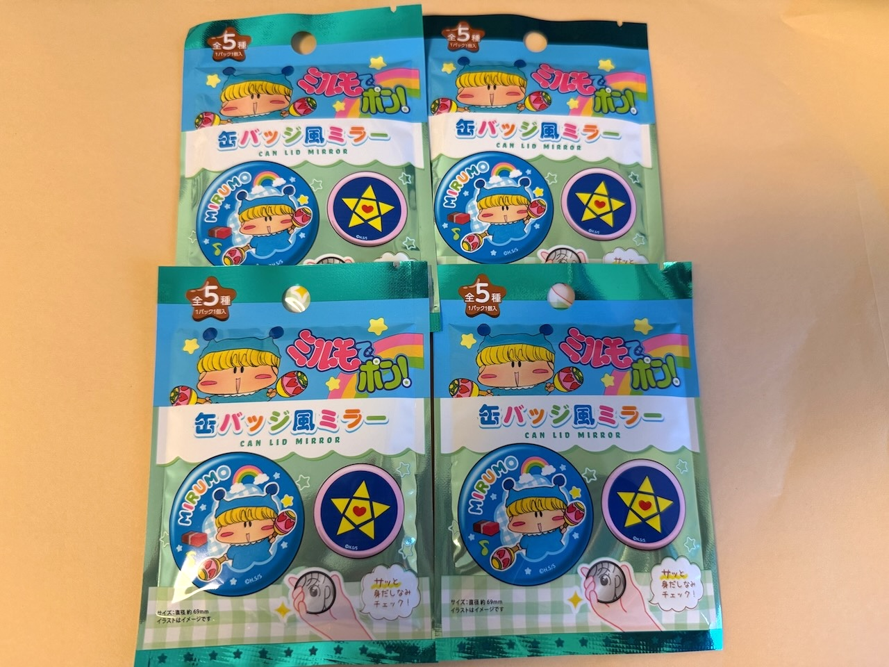
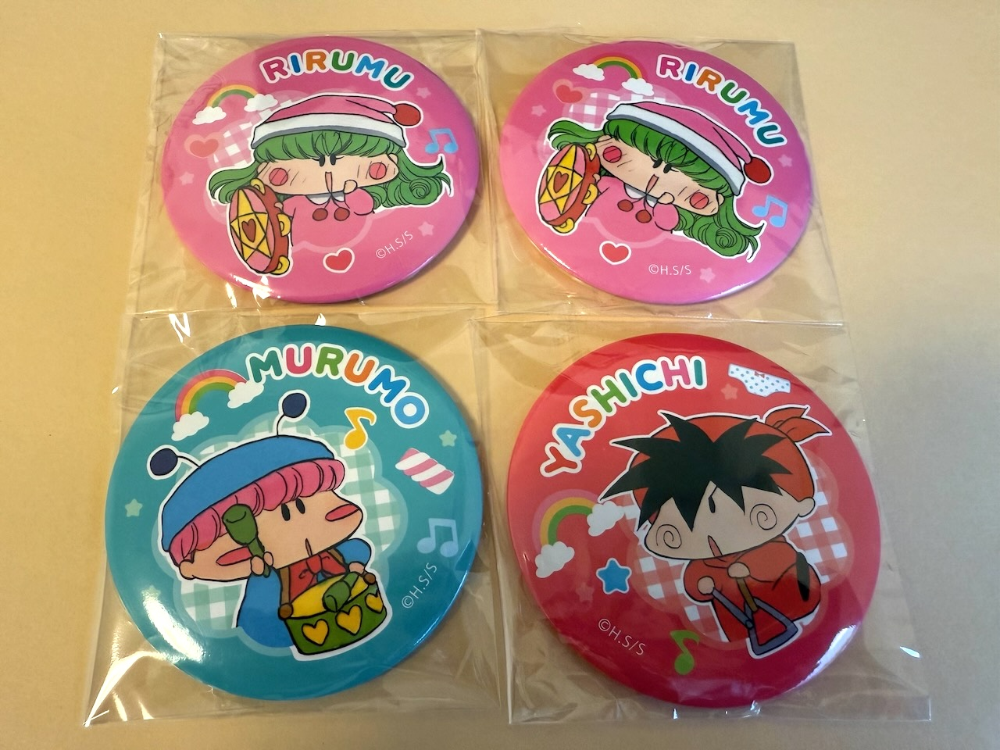
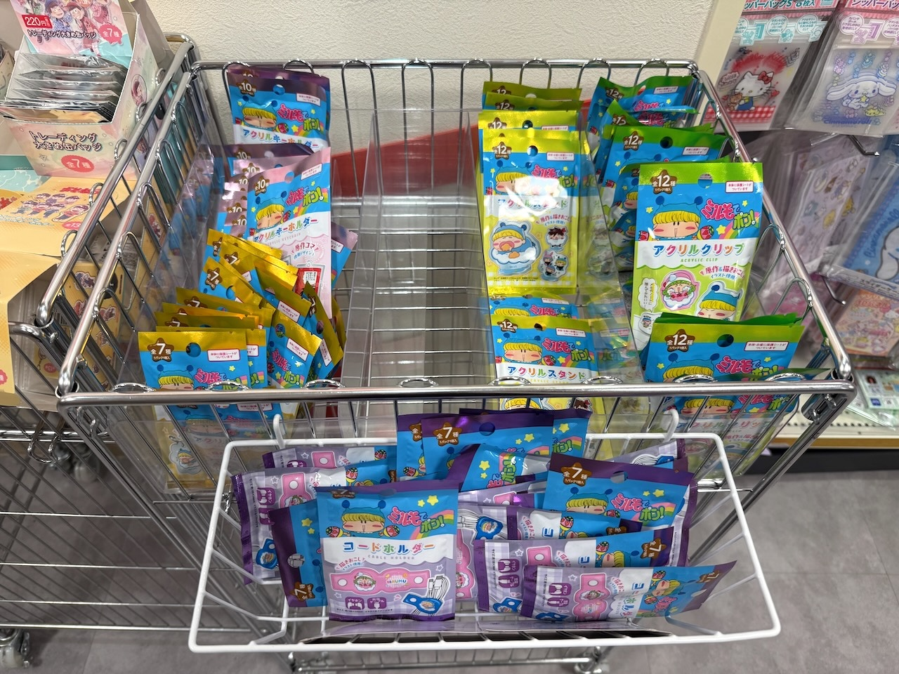
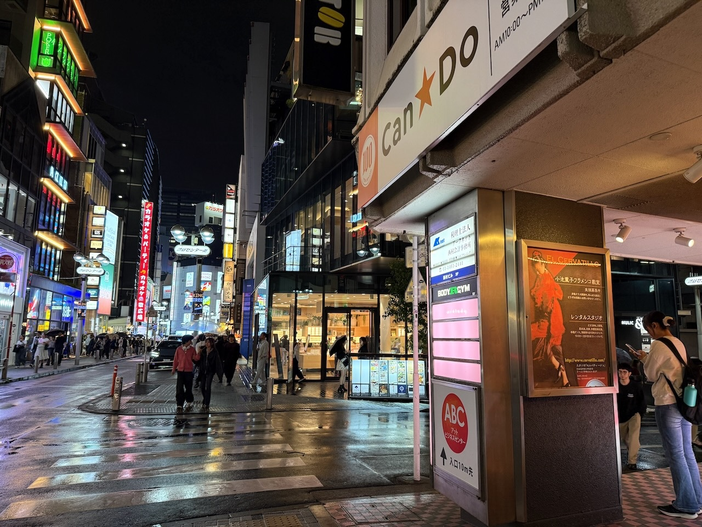
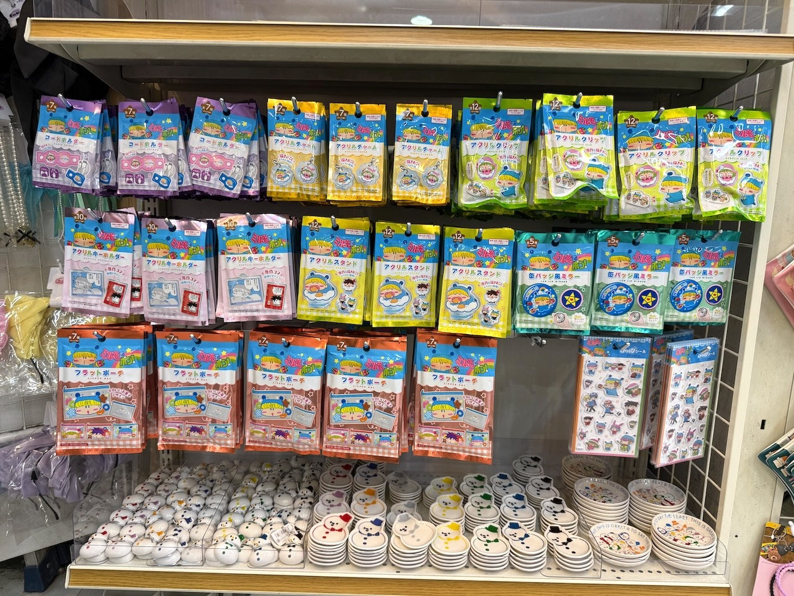
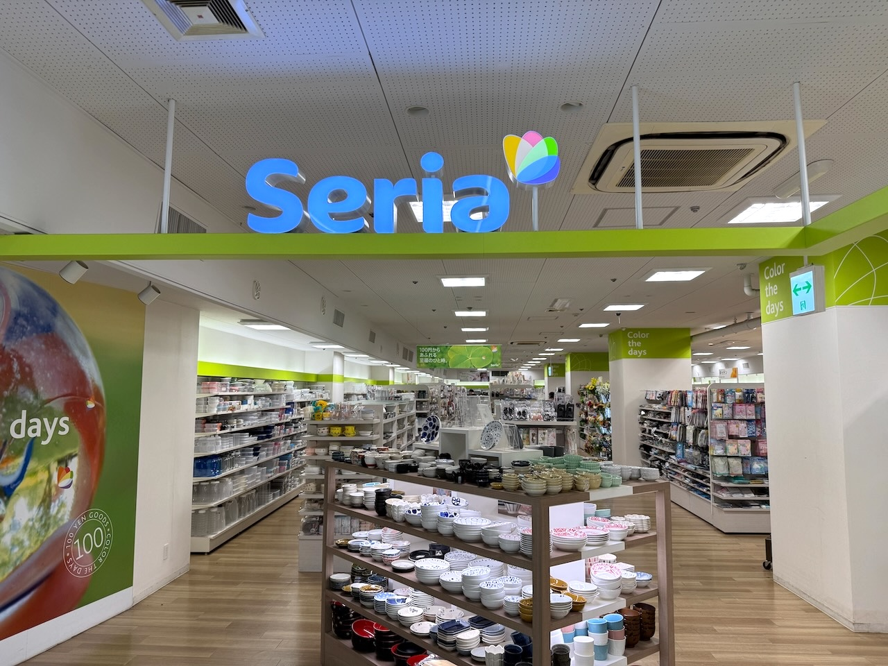
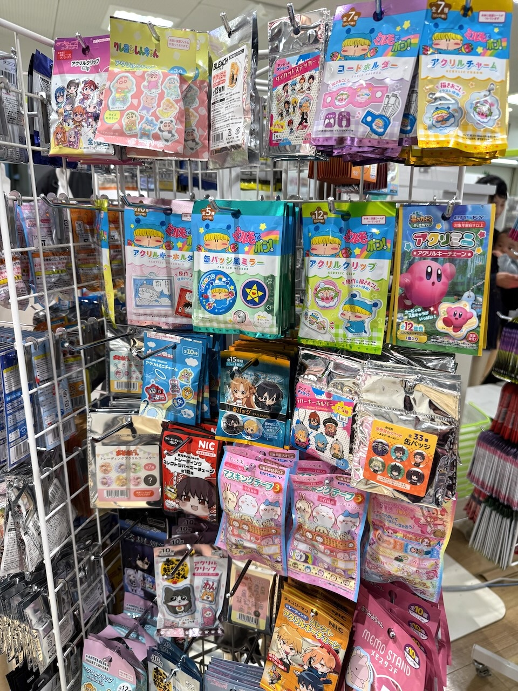

１００円ショップのミルモグッズの続きのレポートになります。
１０月中旬くらいから、ダイソーに続いてキャンドゥやセリアでもミルモグッズが見られるようになりました。
私の方も、前回のレポートで買えなかった「ミルモでポン！ 缶バッチ風ミラー」と「ミルモでポン！ ぷっくりシール」を無事にゲット！
グッズの詳細説明の続きを行いつつ、お店の販売状況も軽くまとめたいと思います。

前回買えなかった缶バッチ風ミラーです。
お店に残っていた４個をなんとかゲット(^^)

中身はムルモとヤシチとリルムでした（ミルモと魔法柄は出ず）
缶バッチ”風”なので、見た目は缶バッチですが、裏側に安全ピンはついていないです(^^;
その代わりに裏側は鏡になっています。
鏡はフタがなく剥き出しなので、なかなか使い所が難しいかも。。
そしてヤシチはスケベ妖精のパンツ柄（汗

最後のグッズは、ぷっくりシールです。
原作柄の登場キャラたちが厚さ１ミリくらいのシールになっています。
脇役のサスケ・ハンゾー・パピィもちゃんと含まれているのもいいですね。
なお、このぷっくりシールは１０月中旬の時点ではダイソーのどの店舗でも扱っておらず、私はキャンドゥ渋谷店でゲットできました。
ここからはお店の販売状況について軽く触れていきますね。
１０月１５日頃にキャンドゥにもミルモグッズが入荷したという情報を入手。
まだ見たことがなかったぷっくりシールを求めて、１０月１９日にキャンドゥ巡りを行いました。
最初に行ったのはキャンドゥ西武新宿ペペ店。

ぷっくりシール発見ならず・・
実はこのお店は２日前にも訪れていて、その時はミルモグッズはまったく見当たらなかったのですが、このように専用のコーナーができていました。
コーナーの１箇所だけ空っぽですが、おそらくダイソーでも品薄であった缶バッジ風ミラーが売り切れていたのだと予想・・

その日の夜はキャンドゥ渋谷井の頭通り店にも行ってみました。

見事にぷっくりシールを発見！（画像の右下）
しかも今回のグッズ全８種類ともに在庫が豊富・・すごい！
今後キャンドゥでミルモグッズが発売された際は迷わず渋谷へ行こうと思います〜＞＜

続いてセリアです。
１０月２６日に我が家の近所である西友所沢駅前店に行ってきました。

このお店は９月２８日も行っていて、その時はミルモグッズは全然なかったのですが、１０月下旬だとちゃんと売られていました。
大規模な店舗ではないので在庫は少々。。
お店によっては全種類扱っていそうなお店もあるかもしれません。
１００円ショップのグッズレポートは以上です。
SNS上でもかなり盛り上がったグッズ販売なので、ぜひ第２弾、第３弾もお願いしたいです(^^)
(2025/10/26)